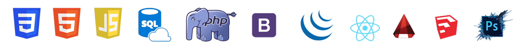

Bienvenue sur mon portfolio
Après une reconversion dans le monde de l'informatique en intégrant la formation "Développeuse Web et Web Mobile" au sein de l'organisme DESCODEUSES, je me suis découverte une réelle passion pour le code. Actuellement encore en formation, j'ai pour projet de faire de cette passion mon métier.
Chez DESCODEUSES, on nous apprend à être autonome en cherchant l'information par nous-même : je peux donc affirmer que Google est plus qu'un simple ami !
Anciennement Designer Workspace, j'ai décidé de me reconvertir après sept années dans le domaine de l'architecture où j'ai notamment été formatrice autoCAD, SketchUP et Photoshop. J'apprécie partager mes connaissances avec les autres et apprendre toujours de nouvelles choses !
Friande de challenges, dynamique et créative, j'aime beaucoup l'humour mais je sais être sérieuse quand il le faut. Mes défauts ? Mais je n'en ai pas ! Plus sérieusement je suis ici pour vous donner envie de me recruter donc je passe ... mais je n'en ai pas beaucoup. Promis !
Ce que j'aime en dehors du Coding :
Mes compétences
Mes expériences professionnelles
2021
DEVELOPPEUSE WEB
- En cours de formation chez DESCODEUSES
2020-2017
DESIGNER WORKSPACE
- Analyse de l’efficacité de l’immeuble / Analyse du cahier des charges
- Étude de faisabilité / plans de phasages / Micro & Micro zoning
- Aménagement des espaces de bureaux / Créations d’espaces collectifs
- Recollement et mise à jour des plans suite au travaux et déménagements
2016
DESSINATRICE RESEAUX TELECOMS
- Création des DOE : dossiers d’ouvrages d’exécutions
- Rassemblement des fichiers administratifs et techniques
- Reproduction des éléments FH et antennes RADIO sur pylônes
- Mise à jour des plans existants
2016-2013
DESSINATRICE RESEAUX CENTRALES NUCLERAIRES
- Responsable de la gestion et des relations clientèles
- Reproduction des plans de structures des centrales nucléaires d’île de france
- Représentation des éléments électriques et télécoms sur plan
- Reproduction des schémas électriques sur le logiciel « Diagrams »